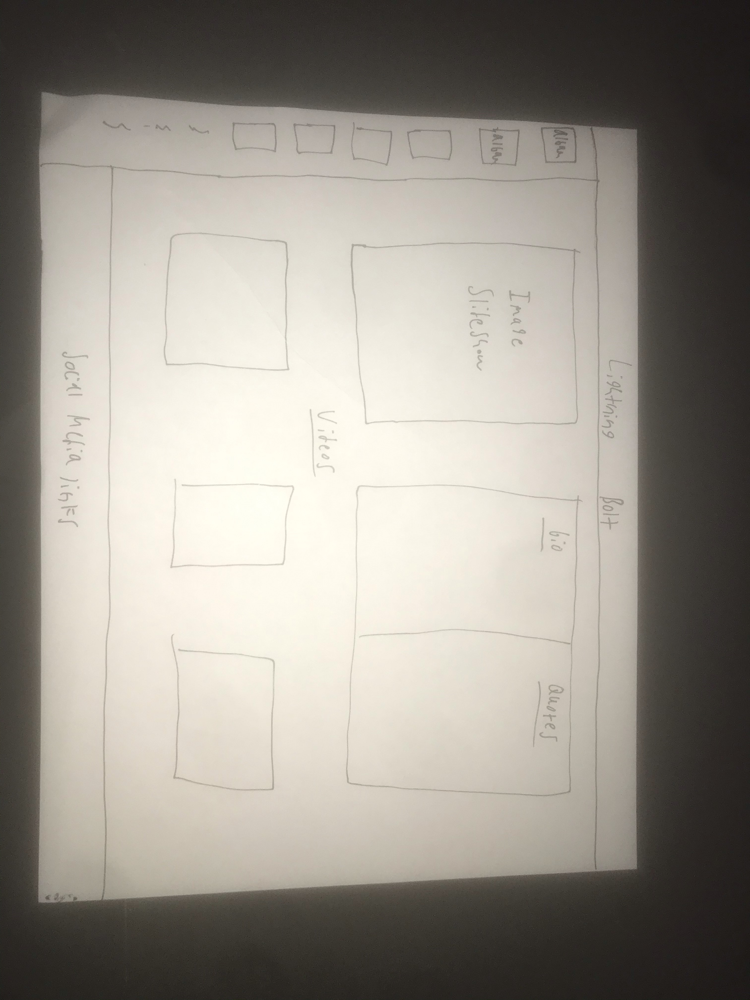

This webpage will act as a fan site for my favorite band, Lightning Bolt. My goal for this project is to thoroughly showcase why Lightning Bolt is such a unique band. Moreover, I’d like this webpage to be a place where someone unfamiliar with the band can get a good idea of what they’re about and their general sound, and hopefully create a new fan in the process.
For my final project, I plan to create a space on the internet dedicated to my favorite band, Lightning Bolt. Ultimately I want to express to the viewer how special of a band Lightning Bolt is; not only in the space of noise rock and other extreme music genres, but music in general. I plan to include a biography that explains how the two members of the band, Brian Chippendale and Brian Gibson, met, their own lives, and other things such as their musical process. I will also include at least one image of the two together in or near the biography. In order to showcase the band’s body of work I will include small images of each of their albums with their respective names and perhaps other info such as release dates. I will most likely organize this on one side of the webpage, perhaps from top to bottom. I also want the viewer to be able to hover over each of the albums and click them to be brought to a full stream of the album on Youtube, or to the bands Bandcamp page. An aspect that I want to put the most importance on is videos of the band performing, since what truly makes Lightning Bolt special is their live performances. I will most likely include 2 or 3 of my favorite performances. The drummer of the band, Brian Chippendale, is also a prolific artist, so I plan on including some of his art in the webpage. The background of the webpage will be made up of either one or several of his art pieces. The general color scheme of the webpage will then most likely complement Chippendale’s art pieces and the art on the band’s albums, so the webpage will be composed of brighter colors. In terms of an intended audience for this webpage, it would honestly be anybody who takes the time to explore it. It can act as a gateway to a different type of music that someone may not have heard before, or it can also act as a haven for other fans of Lightning Bolt and bands similar to them.
 Click to go back home.